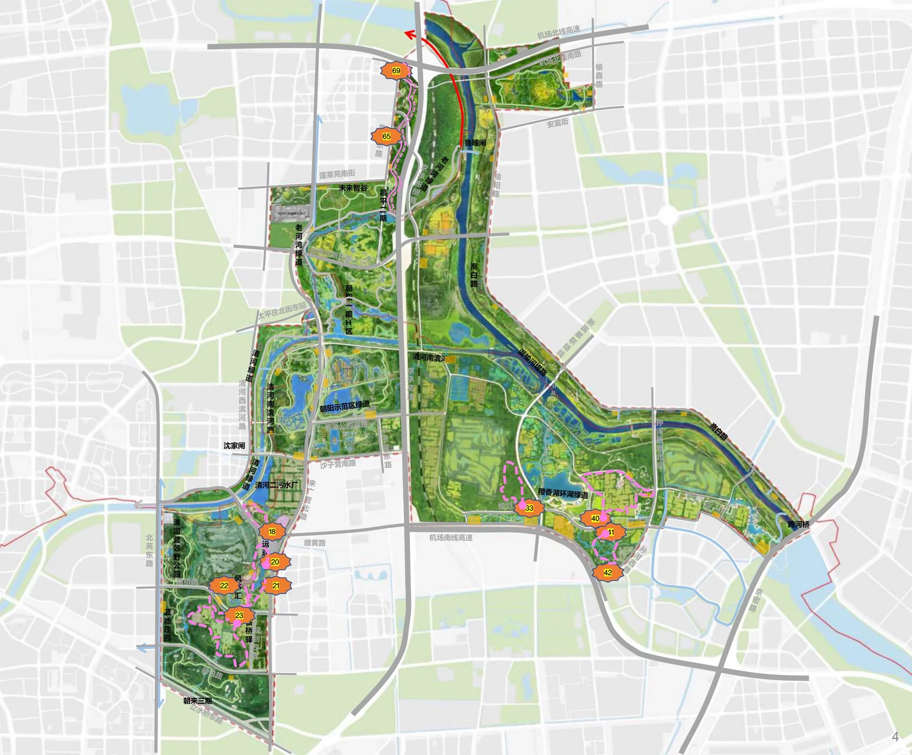

← 北京周末出行 · vibe tripWENYU RIVER · FAMILY CYCLING · 2026.10
把上午交给绿道，
中午找地方好好坐下来。
五道口自驾 → 温榆河来广营片区 → 原点收车 → 正餐或野餐。带自家自行车，不跨马路串园，不把午饭押在一间咖啡店上。
P20首选 · P21备用约6h含午饭 · 策划用时亲子慢骑 · 分两段资料核对：2026-10-10
一张行程卡
| 出发 / 自驾 | 五道口 → 北京温榆河公园-P20停车场；单程预留约1h（估算），具体距离、道路、拥堵以当天导航为准。 |
|---|
| 骑行主线 | 20号门 → 该入口内允许骑行的小环或折返段 → 同一入口 → P20。P21只作换起点方案，不强行骑行串联。 |
|---|
| 距离 / 强度 | 建议累计目标8—12km，可重复安全小环；这是体力目标，非核验的单圈里程。低强度优先，骑行时间约1.5h、分两段；准确长度及爬升未知。 |
|---|
| 装备 / 费用 | 自带普通自行车与儿童车、头盔。开放绿道免费免预约；停车收费未知；餐饮另计。 |
|---|
| 适合谁 | 能稳定刹车、转弯的亲子家庭；儿童只在允许的园内绿道骑，监护人全程陪同。 |
|---|
这条线为什么这样走
温榆河公园体量大，但不是所有园区都允许自行车进入。北京市政府转载报道（2026-08-20）确认：新开放8段、共14公里，分布在3个片区，并有环绿地和环湖的小环线。
从五道口来，不追全园打卡，选来广营片区就能把时间留给林荫、湿地和慢骑；大人前后照应，孩子累了随时收车。
14公里≠P20一条连续环线。18、20、21、22、23号门都是该片区入口，但各段之间的骑行连通性未核，不设计“20→21→23”穿越。
中午首选回原停车场装车，再去北苑／来广营吃正餐。想继续户外就带野餐；想喝咖啡则另开车去示范区，不让孩子骑公共道路追店。
🚲 主线：原点收车，两段慢骑
五道口→自驾至P20→20号门内开放骑行段↺回P20装车→驾车午餐 / 原地野餐→五道口
以上为行程逻辑示意，非GPS轨迹；不提供未经核实的转弯点或虚构GPX。
- 先找停车场，不搜笼统“温榆河公园”。导航P20，满位才改P21；确认入口当天允许自带普通车和儿童车。停车区先推行，拍下车位、入口导览和厕所位置。
- 从20号门进入，当场确认开放小环。沿明确允许骑行的园路慢骑；遇到无标识岔路、封闭、木栈道或公共道路接口，就在安全处折返。不能用地图上相邻的粉线猜连通。
- 第一段45分钟，停15分钟。以熟悉路面与刹车为主，休息点选不挡通行的合法停留处。湿地只远观，不涉水、不贴河岸骑。
- 第二段45分钟，回同一入口。体力好可重复已经确认的小环；累计8—12km只是可选目标，人多、风大或孩子疲劳就缩成4—6km或更短，11:30前收车优先。
- 备选P21出发也执行同一原则。P21 → 21号门内现场开放段 → 原点返回。若两处均限行，改步行短游或返程午饭，不换到公共道路骑行。
按钮是高德关键词检索入口，非已锁定坐标或实测路线。核对“北京／来广营／P20或P21”，勿误选P2、P9。
开放边界：看原图，不猜路线
官方转载列来广营入口18、20、21、22、23号门，配套P20或P21；原报道中粉色虚线为开放骑行区域。左下方为本次选择的片区。

点图查看大图 · 北京日报客户端原报道配图。编号是入口，停车场依据报道正文；图上无法确认20与21/22小环的内部连通关系。2026年8月开放信息不保证每个出行日都无临时管制。
🍽️ 中午怎么选：三种吃法＋咖啡加餐
默认选A：把自行车装好再吃饭，少一次停车场往返。四家店址与证据在页末；当天营业和座位均需复核。
| 方案 | 适合什么情况 | 安排与边界 |
|---|
A · 室内正餐
1.25h | 孩子饿了、风大、想坐稳当 | 眉州东坡（北苑华贸店）优先候选，清河营南街华贸城。吃烤鸭／主食，点单确认不辣。楼内餐厅，不在园门口，先装车再导航。 |
B · 中餐备选
1—1.25h | 想吃鱼、豆腐、饼，或A排队 | 红太阳美食生态园（来广营店），来广营新北路9号。散客接待、室内席位与宴会占场需询问，不能假定随到随坐。 |
C · 自带野餐
0.75—1h | 晴好、想继续户外、少折腾 | 选当日允许停留的休息区；自带三明治／饭团、水果、保温水和坐垫。食物用保冷袋，垃圾带走，不生火、不堵骑行道。不保证固定野餐桌或草坪可入。 |
咖啡加餐
0.75h＋接驳 | 吃完不急着回家 | 温榆·生活馆 Double U Coffee在示范区片区。另驾车、步行入馆；不能视作P20/P21沿线补给，轻食与儿童饮品未知，不代替午饭。 |
想延续户外餐厅氛围？有一个谨慎候选
食草动物·炖锅烧烤·围炉煮茶曾被北京时间报道为P2停车场东200米的户外主题餐厅。当前定位与营业尚未确认，且存在同名异地结果，只在核实门店后采用，否则直接选A/B/C。
一天节奏｜08:30出发，14:30左右回家
以下6h为规划时间，不是实时导航或预约承诺。午餐选A/B；野餐可提前回家，咖啡则额外加时。
| 时间 / 时长 | 做什么 | 落地动作 |
|---|
08:30—09:30
1.00h | 五道口 → 温榆河公园 P20停车场 | 单程预留1小时，估算非实时导航；P20满位改P21，不在路边卸车。 |
09:30—09:45
0.25h | 卸车、头盔、厕所、看入口导览 | 停车区推行；向工作人员确认当天开放绿道和最近厕所。 |
09:45—10:30
0.75h | 第一段：20号门内开放小环 / 原路折返 | 只循允许骑行的现场标识；确认能闭合再绕圈，否则原路返回。 |
10:30—10:45
0.25h | 离开主路停靠，补水和点心 | 不在弯道、坡底、河岸边缘停车。无需依赖商店营业。 |
10:45—11:30
0.75h | 第二段：同片区续骑，原入口收车 | 按体力重复已确认的小环，或在安全可停处折返；不以刷里程为目标。 |
11:30—11:45
0.25h | 回P20装车 | P21出发则回P21；不跨公共道路串园。 |
11:45—12:15
0.50h | 驾车去午餐点 / 园内野餐准备 | 30分钟是接驳预留，不是餐厅实测车程；先看导航和营业。 |
12:15—13:30
1.25h | 午餐＋坐下休息 | 主推眉州东坡；中餐备选红太阳；晴好可自带野餐。 |
13:30—14:30
1.00h | 返回五道口 | 预留1小时，堵车顺延；若加咖啡再多留0.75—1小时。 |
出发前的四件事
- 准入：报道明确不允许共享单车、电动车、助力车、滑板、轮滑、成人滑板车和平衡车进入。自带普通自行车与合适的儿童自行车，不押宝现场租车。
- 孩子不上公共道路：未满12岁不能在公共道路骑自行车，家长陪同也不例外（新京报，2024-08-14）。停车区推行，跨片区用汽车，园内也须确认允许骑行、避让行人并控制速度。
- 装备与天气：检查刹车、胎压、链条；全员头盔，带水、点心、补胎工具、薄外套。出行日未指定，本页不预报天气；临行查看北京气象预警与园方公告，雷雨、大风或积水改期。
- 补给与午餐：厕所以现场导览／工作人员确认为准，未核到稳定营业的P20/P21沿线补给店。11:00前查店是否营业、是否有桌、停车入口；查不到就采用自带野餐或返程已确认营业的商场餐饮。
为什么不推荐P9泵道作为本次主线：这是另一项目与片区，不等于新开放绿道。为什么不串三大片区：路线连通未核、跨路接驳增加亲子风险，也挤占午饭和休息。
餐饮信息卡｜地址、菜单线索与证据
这是按点评式结构整理的多源信息卡，不是大众点评实时数据。没有查到的评分、人均和营业状态保留未知；携程旧快照不冒充当前点评分。商户排序是行程适配建议，不是榜单排名。
眉州东坡（北苑华贸店）
北苑／来广营返程室内正餐兜底
携程4.7／5，184条点评（历史快照；不是大众点评分数） · 人均：人民币114元／人（携程页面历史快照，不是实时菜单预算）
- 地址
- 北京市朝阳区清河营南街华贸城7号院8号楼3层
- 营业参考
- 10:00–22:00（携程缓存商户页，不能作为2026年当天营业保证）
- 吃什么 / 休息
- 东坡烤鸭、宫保鸡丁、东坡肘子、三鲜锅巴、担担面。正餐和主食选择明确，优先询问烤鸭、三鲜锅巴等不辣做法；不将川菜馆默认成全菜单适合孩子。
- 空间与停车
- 商场楼内3层餐厅；当天座位余量未知；携程正文列免费停车；免费时长、消费验证及车库入口未知
- 和骑行区的关系
- 清河营南街华贸城商业楼内，不属于公园入口周边餐饮。用于骑完回原停车场装车后进入北苑／来广营商圈；从P20／P21、P2的准确路程和门到门驾车时长未知。
- 用前确认
- 孩子饿了或风雨天想结束户外时优先考虑；需要装车驾车，不在公园门口。当天营业、座位和实际车程未核；不宣称到店几分钟。
地图搜店（核对地址） ↗证据：携程美食商户详情（未知（页内未给发布日期）；索引抓取 2024-12-05T13:35:00Z（WebIQ browse返回；搜索结果同源时间存在8小时差异，不据此推定更新）） · 企查查公开索引（2025-11-19（页内更新时间）；索引抓取 2025-11-19T11:23:00.0000000Z）
红太阳美食生态园（来广营店）
装车后去来广营的正规正餐候选
未知 · 人均：未知
- 地址
- 北京市朝阳区来广营新北路9号
- 营业参考
- 10:30–21:30（8684资料；当天营业未知）
- 吃什么 / 休息
- 蜂窝玉米、大丰收、野菜豆腐、手撕饼、清蒸鲈鱼、鱼头泡饼。店址和中餐菜品明确，可作装车后坐下吃正餐候选；清蒸鱼、豆腐、饼类可优先询问少盐不辣，不预设儿童套餐。
- 空间与停车
- 婚宴酒店、可办大型宴会的餐饮场所；具体可用室内散客座位及空调未知；8684正文列免费停车；容量、入口和免停条件未知，出发前核实
- 和骑行区的关系
- 在来广营新北路9号、朝来农艺园北站附近，不在温榆河公园朝阳示范区门内。可作返回城区方向的来广营停留；从P2、P20／P21的距离和驾车时长未知，不宣称紧贴公园或必然顺路。
- 用前确认
- 想吃中餐、希望有停车信息时的返程候选；不是公园门口餐厅。当天营业、座位和实际车程未核；不宣称到店几分钟。
地图搜店（核对地址） ↗证据：8684北京生活／美食资料（未知（正文无发布日期或更新日期）；索引抓取 2026-09-08T06:02:00Z）
温榆·生活馆 Double U Coffee × 三三两两俱
示范区咖啡休息补给；轻食供应未知
未知 · 人均：未知
- 地址
- 北京市朝阳区来广营北路1号院、2号院（地图资料为园区级地址，具体馆址未知）
- 营业参考
- 工作日09:00–17:00；节假日09:00–17:30（公园官方微博2025-12-23原文；普通周末未单独明确）
- 吃什么 / 休息
- 热饮、咖啡饮品。适合骑完后大人喝咖啡、孩子坐下歇脚；儿童无咖啡因饮品、糕点和午餐轻食菜单未核，不能默认有。
- 空间与停车
- 官方称生活馆、现代简约风、朋友小聚聊天据点；具体室内座位数量、是否有空调未知；未知
- 和骑行区的关系
- 城市吧公交指南列有温榆河公园九号门（沙子营村北）及六号门（沙子营村南），证明位于来广营北路示范区片区，但不证明店在某门口或两个门等距。最近可用停车场、步行距离未知；P20／P21合法骑行区不是此6／9号门片区。
- 用前确认
- 示范区停留时的咖啡首选候选；不代替午饭。当天营业、座位和实际车程未核；不宣称到店几分钟。
地图搜店（核对地址） ↗证据：北京温榆河公园官方微博，新浪公开正文（2025-12-23 18:46；索引抓取 2026-09-17T12:01:00Z） · 城市吧地图资料（2022-09-08（页内最后更新）；索引抓取 2026-07-22T21:28:00Z）
食草动物·炖锅烧烤·围炉煮茶
公园附近正餐／坐下喝茶，条件候选
未知 · 人均：未知
- 地址
- 北京市朝阳区来广营北路温榆河公园2号停车场东200米（报道给出的定位，无门牌号）
- 营业参考
- 未知
- 吃什么 / 休息
- 炖锅、烧烤、围炉煮茶。骑完先装车；适合想延续户外氛围、坐下吃热锅的家庭。建议避开炭炉烫伤和烟气；室内位置及不辣选择需问店家。
- 空间与停车
- 未知；报道明确为户外主题餐厅，店外有帐篷；餐厅自有停车位、收费未知；不将公园P2当餐厅保证可用停车位
- 和骑行区的关系
- 北京时间报道明确写温榆河公园2号停车场东200米。该200米是报道定位描述，不是实测步行路程；对应大门、是否需过来广营北路、从P20／P21驾车距离均未知。
- 用前确认
- 仅在门店定位和当天营业另核后采用；不作为唯一午饭兜底。当天营业、座位和实际车程未核；不宣称到店几分钟。
地图搜店（核对地址） ↗证据：北京时间／京城美食地图（2025-02-16 11:00:09；索引抓取 2026-09-28T14:07:00Z）